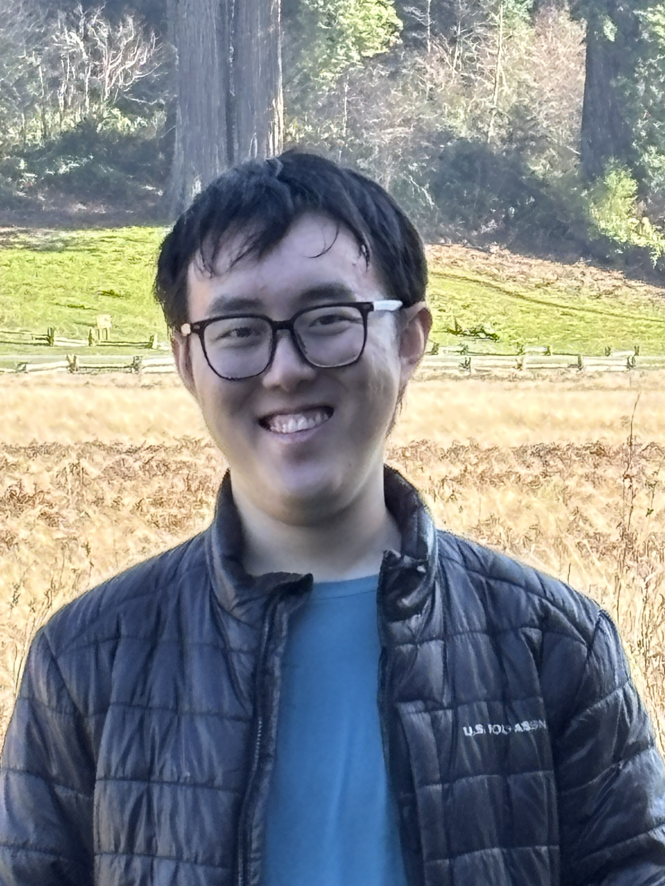

|
 |
Wenxiao Cai
PhD Student |
I am currently a PhD student in Stanford University's Department of Electrical Engineering. I am advised by Prof. Thomas H. Lee and work closely with Prof. Ali Keshavarzi.
I work on the theory and applications of low-power computing with analog circuits. I also have a background in multi-modal LLMs and computer vision.
I received an M.S. in Electrical Engineering from Stanford University in 2026 and a B.S. in Automation from Southeast University in 2024, ranking 1st out of 111 students by GPA. In 2025, I received the Samsung Semiconductor Fellowship.